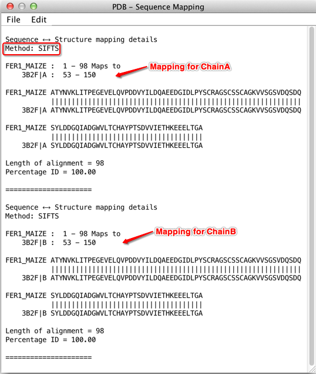

SIFTS Mapping for UniProt sequences and PDB
Structures
SIFTS (Structure Integration with Function,
Taxonomy and Sequences) is a database of residue-level mappings
between UniProt protein sequences, and protein structures found in
the PDB. The database is updated for each PDB release, and is
provided by the PDBe
at EMBL-EBI.
When Jalview imports PDB data for a protein sequence found in UniProt, either via the 'View 3D Structure...' option, or the 'Fetch DB Refs' web services menu, Jalview will also download its SIFTS record and use that information to construct a mapping between the sequence and downloaded structure.
If, for some reason, no SIFTS mapping data exists, then Jalview will generate a mapping using the built-in Needleman and Wunsch global alignment algorithm. This is how sequence-structure mappings were created before version 2.10.
Controlling and troubleshooting SIFTS mappings
Configuration options controlling whether SIFTS mappings are used
can be found in the Tools → Preferences →
Structure tab, under 'Sequence ↔ Structure method'.
Note:
Changing the configuration will only affect how new mappings are
created. In order to recompute mappings for structures already
loaded, please reload the sequence & structural data.
Multi-Chain Mappings
SIFTS gives Jalview the
ability to display multi-chain mappings between UniProt sequences
and PDB structure data. This is important when working with
multimeric proteins, when the biological assembly can contain
several structures for the same protein sequence. Multi-chain
mapping allows all residues in a structure to be located in the
alignment, and also, when shading the structure by sequence colours,
enables conservation patterns between oligomer interfaces to be
explored.
To see this in action, Retrieve the UniProt sequence FER1_MAIZE, and then view one of its structures: 3B2F. Mousing over the sequence results to two positions being highlighted in the structure, and colouring the alignment transfers the color to all the mapped chains in the structure.
Viewing Mapping Output
The mapping provided
by the SIFTS record is accessible via File →
View mapping menu of the structure viewers. The screenshot below
shows the mapping created between UniProt sequence FER1_MAIZE and
proteins in PDB 3B2F, which reports mappings for two chains. The
mapping method is also reported (highlighted with red border).

SIFTS Mapping integration was added in Jalview 2.10